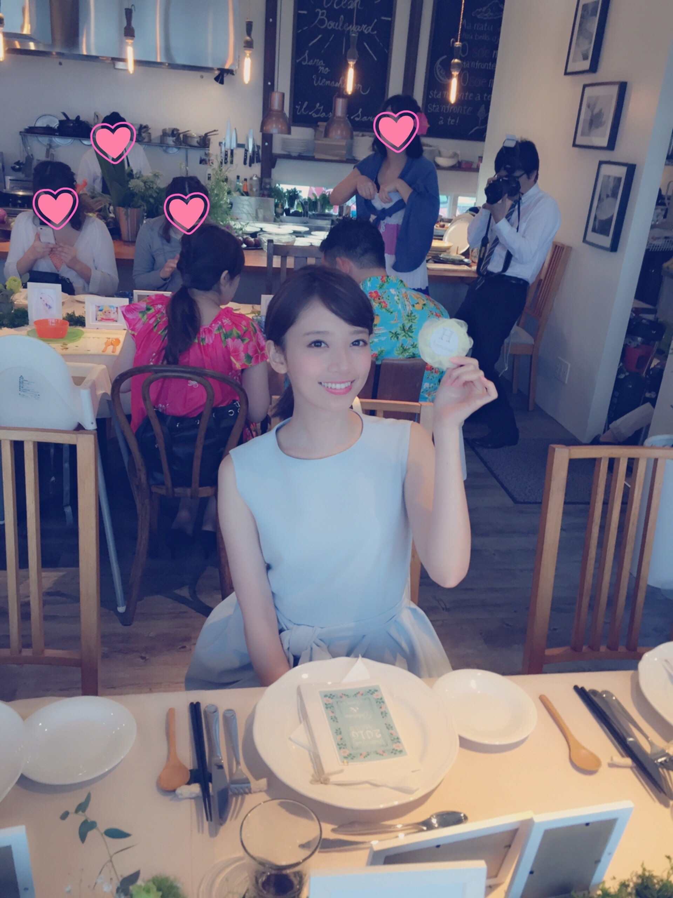
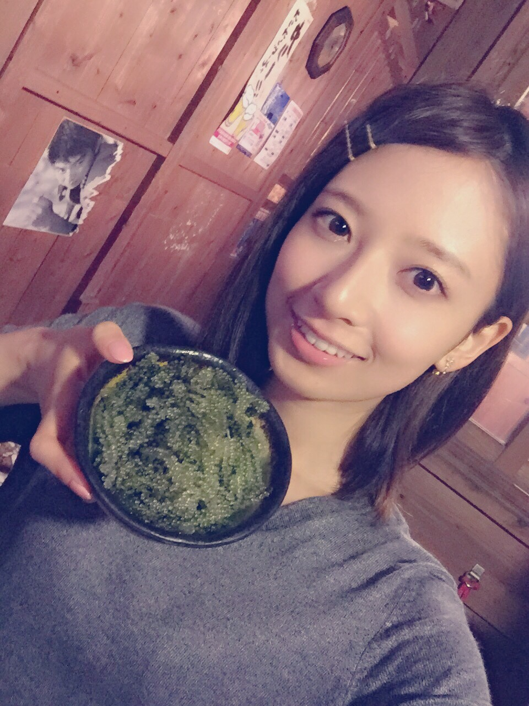
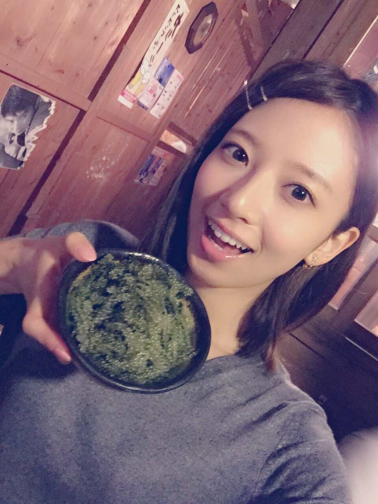

| 2016/04 24 Sun | ものもらってもうた |
ものもらい です おとついから

でもメイクってすごいの、わかる？？はれてるの
眼科行って薬もらってるんだけどなんか日に日に痛くなって腫れてるけどこういうものなのかな？
でもこういうことをブログにかいたらだいたい次の日すっかり治るのが定石
今日のシブヤノオト見てくれた？生放送！
MCの清水富美加さんは実は一方的によくお見かけしているの...！
かわいい。かわいかった...。
趣味が似ているところがありそうなんだ...今度お会いしたとき話しかけてみたい！だがしかしわたしは極度の人見知り。だいたい願望でおわるのだ。ハハ...
あ！ななみんものもらいだ！って気付いた人いる？笑
昨日はSuchmosさんのライブを観させて頂いた！
さいこうでした。さいのこうでした。
すごく楽しそうにライブしてて、それすらギャップに感じるめちゃくちゃかっこいい歌歌ってものすごいかっこいい演奏で、わあ、スターだな、と、、、すごい勢いでスターになる人を間近で見れたなと、とても嬉しかったです...
とても同年代の方がつくるような音楽だとは思えないというか、どうやって生きてきたらこんな曲作ってこんなパフォーマンスできるの？って感じ...
やはりライブよい！生で観る聴くっていうのは最高ですね！
そして先日、友達の結婚式にいってきたよ！！バスケで青春を共にした仲間の！

最高だったなー...
あんなに汗だくになって体育館を走って毎日バスケのことを考えてた子が
立派な服を着てニコニコしつつと緊張した顔して、めちゃくちゃキレイなかわいい奥さんを迎えて娘ちゃんも最高にかわいくて...
学生のときからのことを思い返すとなんだか感極まって式の時うるうるした笑
ほんとに幸せそうでうれしかったー！感動したー！！
友達とはあんまり会えないしそれぞれがそれぞれの道に進んでいて、わたしは結婚するのは確実にだいぶ先、むしろできるのかってくらいだから学生の頃とは違って価値観とか色々なものを共有することって前みたいに簡単にできることじゃなくなっているけど、
結婚式に出席して友達の最高に幸せそうな姿をみると
あーわたしもこの先自分自身に起こる幸せや嬉しさを友達と共有したいと思ったよ！
簡単に言うといつか結婚して友達とママ友トークみたいなのしたいっていう！笑
普段はそういう願望今は全くないんだけどさ！笑
わたしは結婚願望なくしがちだから、積極的に結婚式に参加して行き遅れないように頑張ろうと思う。いやしかしわたしはどの占いを見ても晩婚型と出る、、、どうなるわたし、、、
人生で初めてうみぶどうをたべた
みどりだ

ぷつぷつ

おいしそう！！！

ハッ、そして昨日発売のCanCam！！
別冊付録で、橋本奈々未と松村沙友理の100のこと♡BOOKがついているよ！！！
簡単に言ってしまえば、普段出していないような、タイムラグのない今のわたしのことをめちゃくちゃ詳しく知れる本になっています！！！
写真も普段のわたしとは少し違う、CanCamに最高に可愛くしてもらったものばかりで絶対にみてほしい！！
https://instagram.com/p/BEkSBtwwZWF/
ここからその別冊付録の予告が見れるよ！
撮影にカメラが密着してたの！わー！
これはCanCamのインスタ公式アカウントなんだけど、インスタやってる人はぜひフォローしてね！ちょくちょくわたしやさゆりんも登場してるよー！！
もちろんCanCam本誌にもいますよ！みつけてね！
今月号はファッションページでわたしのおでこまるだしのショットがあるんだけど、とてもお気に入り。笑
ぜひみてね(*^◯^*)
コメント(825)
2016/04/24 23:06